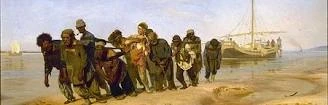

Доброго времени суток!

Главные шедевры Третьяковской галереи. г. Москва
Виктор Михайлович Васнецов
"Богатыри" 1898 г.

Иван Иванович Шишкин
"Утро в сосновом лесу" 1889 г.

Автор неизвестен
"Спас Нерукотворный. Прослвление Креста" Двусторонняя икона вт.пол.XII века

Жемчужины Государственного Русского Музея. г.Санкт-Петербург
Архип Иванович Куинджи
Лунная ночь на 'Днепре" 1880 г.

Илья Ефимович Репин
"Бурлаки на Волге" 1880 г.
Николай Константинович Рерих
"Небесный бой" 1912 г.

Важные экспонаты Государственного исторического музея. г.Москва
Портрет царя Алексея Михайловича
конец 1670-х — начало 1680-х годов

Перо Александра II
1861 г.

Золотая чарка Петра I
1709 г.